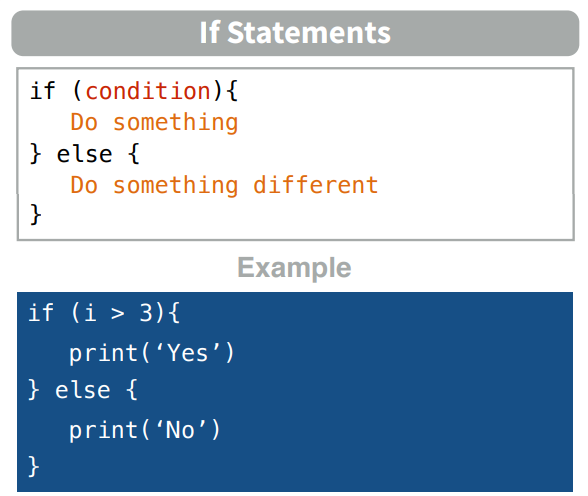
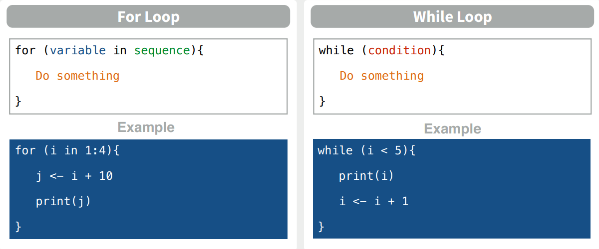
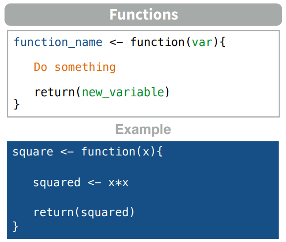
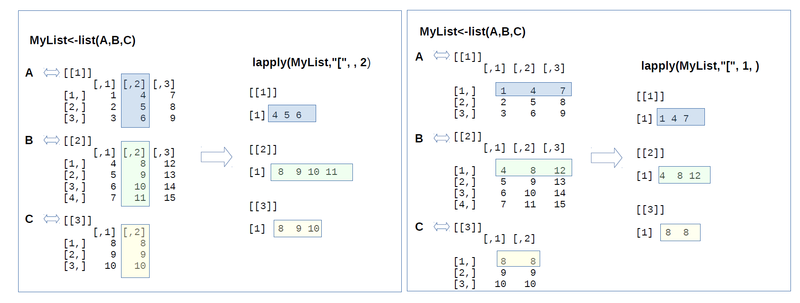

2.8 Control Flow
Flow control statements allow us to generate portions of code that perform certain actions given certain conditions. Let’s differentiate between: Conditional sentences and loops
2.8.1 Conditional statements
Conditional statements allow us to perform actions based on specific conditions that we attribute to objects created in our R session. In this way, we can generate huge chains of conditionals that result in multiple different actions. To work with conditional statements in R we will use the following keywords: if, else if and else.


The specific syntax to create conditional statements in R is the following

Let’s see some code examples. In this first example R will perform an action (to print something) in case x is a negative number:
x = -3
if (x < 0) {
print("x is a negative number")
}## [1] "x is a negative number"In a second example we are using the if and else statements to print if x is negative or positive
x = 5
if (x < 0) {
print("x is a negative number")
} else {
print("x is a positive number or zero")
}## [1] "x is a positive number or zero"In this third example we are using more conditions to print if x is negative, zero or positive.
x = -3
if (x < 0) {
print("x is a negative number")
} else if (x == 0) {
print("x is zero")
} else {
print("x is a positive number")
}## [1] "x is a negative number"2.8.2 Loops
The classic, Fortran-like loop is available in R. The syntax is a little different, but the idea is identical; you request that an index (e.g. i), takes on a sequence of values, and that one or more lines of commands are executed as many times as there are different values of i. Here is a loop executed five times with the values of i from 1 to 5; we print the square of each value:
# This is the abbreviated way to write a for loop
for (i in 1:5) print(i^2)## [1] 1
## [1] 4
## [1] 9
## [1] 16
## [1] 25For multiple lines of code, you use curly brackets {} to enclose material over which the loop is to work. Note that the ‘hard return’ (the Enter key) at the end of each command line is an essential part of the structure (you can replace the hard returns by semicolons if you like, but clarity is improved if you put each command on a separate line):
j = k = 0
for (i in 1:5) {
j = j+1
k = k+i*j
print(i+j+k)
}## [1] 3
## [1] 9
## [1] 20
## [1] 38
## [1] 65There are two types of loops:
whileloops: they perform a certain action iteratively until a stop condition is metforloops: they execute a certain action in an iterative way for each element of a vector (set of elements).
We must be very careful not to make an infinite loop. This will produce that our R session starts working without a stop condition and we will have to kill the process to finish it. To prevent this situation we can always use the break keyword in our loops.


Here you can see the specific syntax we use in R to create loops:

2.8.2.1 While loops examples
In this first example we are creating a ctr variable that starts in 1. Inside our while loop we are going to print our variable and later add 1 in each iteration
ctr = 1
while (ctr <= 7) {
print(paste("ctr is", ctr))
ctr = ctr + 1
}## [1] "ctr is 1"
## [1] "ctr is 2"
## [1] "ctr is 3"
## [1] "ctr is 4"
## [1] "ctr is 5"
## [1] "ctr is 6"
## [1] "ctr is 7"We can apply the same logic to create a countdown to zero:
count = 10
while (count >= 0){
print (count)
count = count - 1
}## [1] 10
## [1] 9
## [1] 8
## [1] 7
## [1] 6
## [1] 5
## [1] 4
## [1] 3
## [1] 2
## [1] 1
## [1] 02.8.2.2 For loops example
As we said, for loops are going to execute certain action for each element in any data structure (normally a vector). In this example we are just printing each element we have inside the cities vector.
# Print each element in a vector
cities = c("New York", "Paris", "London", "Tokyo", "Rio de Janeiro", "Cape Town")
for (i in cities) {
print(i)
}## [1] "New York"
## [1] "Paris"
## [1] "London"
## [1] "Tokyo"
## [1] "Rio de Janeiro"
## [1] "Cape Town"2.8.2.3 Loops and conditional statements combination
Once we know the different flow control methods we can combine them to perform much more complex actions. Let’s look at some examples.
We can use a conditional statement to break our loops. In this example we are printing our ctr variable as we did before, but we will break the loop if the module obtained dividing ctr by 5 is equal to 0.
# Using the break keyword with a condition
ctr = 1
while (ctr <= 7) {
if (ctr %% 5 == 0)
break
print(paste("ctr is", ctr))
ctr = ctr + 1
}## [1] "ctr is 1"
## [1] "ctr is 2"
## [1] "ctr is 3"
## [1] "ctr is 4"We can also introduce the next statement inside our loops. This will skip the current iteration, not performing all the actions we have below it inside the loop. In this case we are printing all the cities with a number of characters different to 6.
# Print cities with 6 characters
cities = c("New York", "Paris", "London", "Tokyo", "Rio de Janeiro", "Cape Town")
for (city in cities) {
if (nchar(city) == 6)
next
print(city)
}## [1] "New York"
## [1] "Paris"
## [1] "Tokyo"
## [1] "Rio de Janeiro"
## [1] "Cape Town"In this last example we are printing only the even numbers in the numbers list:
# Print even numbers
numbers = c(1:100)
for (number in numbers){
if (number %% 2 == 0){
print(number)
}
}## [1] 2
## [1] 4
## [1] 6
## [1] 8
## [1] 10
## [1] 12
## [1] 14
## [1] 16
## [1] 18
## [1] 20
## [1] 22
## [1] 24
## [1] 26
## [1] 28
## [1] 30
## [1] 32
## [1] 34
## [1] 36
## [1] 38
## [1] 40
## [1] 42
## [1] 44
## [1] 46
## [1] 48
## [1] 50
## [1] 52
## [1] 54
## [1] 56
## [1] 58
## [1] 60
## [1] 62
## [1] 64
## [1] 66
## [1] 68
## [1] 70
## [1] 72
## [1] 74
## [1] 76
## [1] 78
## [1] 80
## [1] 82
## [1] 84
## [1] 86
## [1] 88
## [1] 90
## [1] 92
## [1] 94
## [1] 96
## [1] 98
## [1] 1002.8.2.4 Nested for loops
We can use a for loop within another for loop to iterate over two things at once (e.g., rows and columns of a matrix).
for(i in 1:5){
for(j in 1:5){
print(paste(i,j))
}
}## [1] "1 1"
## [1] "1 2"
## [1] "1 3"
## [1] "1 4"
## [1] "1 5"
## [1] "2 1"
## [1] "2 2"
## [1] "2 3"
## [1] "2 4"
## [1] "2 5"
## [1] "3 1"
## [1] "3 2"
## [1] "3 3"
## [1] "3 4"
## [1] "3 5"
## [1] "4 1"
## [1] "4 2"
## [1] "4 3"
## [1] "4 4"
## [1] "4 5"
## [1] "5 1"
## [1] "5 2"
## [1] "5 3"
## [1] "5 4"
## [1] "5 5"2.8.2.5 The ifelse function
Sometimes you want to do one thing if a condition is true and a different thing if the condition is false (rather than do nothing, as in previous examples). The ifelse function allows you to do this for entire vectors without using for loops.
v = 0:10
ifelse(v>5, yes = T, no = F)## [1] 1 1 1 1 1 1 0 0 0 0 0ifelse(v > 5, v*2, v)## [1] 0 1 2 3 4 5 12 14 16 18 20ifelse returns a value with the same shape as v which is filled with elements selected from either yes or no depending on whether the element of test is TRUE or FALSE.
2.8.3 Functions
Functions are R objects that evaluate a set of input arguments and return an output. This is the syntax we use in R to create functions:

Arguments are a set of variable names that will be used within the function
Arguments can be:
- Required.
- Optional (they are assigned a default value).
- Adjustable length (each of these parameters is accessed with ..1, ..2, etc.).
The function return is specified by calling the function return(x). Sometimes it is not necessary, and the result of the last evaluated expression will be returned. It is recommended to use it for legibility.
The function below has a required parameter (a) and an optional parameter (b).
Parameter b, being optional, if it is not passed in the call, will take the value 1.
The function has two returns:
- When b equals zero (with return)
- When b is not equal to zero (without return)
z = 1
do_something = function(a, b = 1) {
if (b == 0)
return(0)
z = z + a*b + a/b
z
}
do_something(5)## [1] 11do_something(4,4)## [1] 182.8.3.1 Domain of variables in functions
When a function is invoked, a new memory frame is created for it.
Each memory frame is inside the call stack, the first frame corresponding to the global environment.
Each function call will create a local frame.
The names of the variables within a function are resolved in the following order:
- Local environment.
- Parent environment (functions defined within functions).
- …
- Global environment.
Thus, a variable that is defined within a function is not available outside the function.
2.8.3.2 Replicating code with functions
As in any programming environment, the functions are very useful in order to replicate code by specifying certain parameters. Remember the countdown example? Below we have converted the same code into a function to decide the initial value of this process.
countdown = function(count = 5){
while (count >= 0){
print (count)
count = count - 1
}
}By default, the countdown starts in 5,
countdown()## [1] 5
## [1] 4
## [1] 3
## [1] 2
## [1] 1
## [1] 0But we can change the count parameter, so it will start in the number we specify
countdown(3)## [1] 3
## [1] 2
## [1] 1
## [1] 02.8.4 The apply Family
The apply() family pertains to the R base package and is populated with functions to manipulate slices of data from matrices, arrays, lists and dataframes in a repetitive way. These functions allow crossing the data in a number of ways and avoid explicit use of loop constructs. They act on an input list, matrix or array and apply a named function with one or several optional arguments.
The called function could be:
- An aggregating function, like for example the mean, or the sum (that return a number or scalar);
- Other transforming or subsetting functions; and
- Other vectorized functions, which yield more complex structures like lists, vectors, matrices, and arrays.
The apply() functions form the basis of more complex combinations and helps to perform operations with very few lines of code. More specifically, the family is made up of the apply(), lapply(), sapply(), vapply(), mapply(), rapply(), and tapply() functions.
But how and when should we use these?
Well, this depends on the structure of the data that you want to operate on and the format of the output that you need.
2.8.4.1 apply() Function
Let’s start with the godfather of the family, apply(), which operates on arrays. For simplicity, we will use 2D arrays, which are also known as matrices.
The R base manual tells you that it’s called as follows: apply(X, MARGIN, FUN, ...) where:
Xis an array or a matrix if the dimension of the array is 2;MARGINis a variable defining how the function is applied: whenMARGIN=1, it applies over rows, whereas withMARGIN=2, it works over columns. Note that when you use the constructMARGIN=c(1,2), it applies to both rows and columns; andFUN, which is the function that you want to apply to the data. It can be any R function, including a User Defined Function (UDF).
Let’s construct a 5 x 6 matrix and imagine you want to sum the values of each column.
# Construct a 5x6 matrix
X = matrix(rnorm(30), nrow=5, ncol=6)
# Sum the values of each column with `apply()`
apply(X, 2, sum)## [1] 3.3068149 0.7576652 -1.7653971 4.3518894 2.3963091 2.3626304Remember that in R, a matrix can be seen as a collection of line vectors when you cross the matrix from top to bottom (along the vertical line 1, which specifies the dimension or margin 1), or as a list of columns vectors, spanning the matrix left to right along the dimension or margin 2.

That means that the instruction you have just entered, depicted in figure 1, translates into: “apply the function ‘sum’ to the matrix X along margin 2 (by column), summing up the values of each column.
Note that, to avoid cluttering the picture, just one of the columns is highlighted.
# Construct a 5x6 matrix
X = matrix(rnorm(30), nrow=5, ncol=6)
# Sum the values of each column with `apply()`
apply(X, 2, sum)## [1] -0.03206613 -1.80367548 1.05338074 0.33361302 -1.38118072 4.71834634You end up with a line vector containing the sums of the values of each column.
The output of the above code, a line vector, would have also been given if you summed along the lines of the matrix. This is how R displays the result.
2.8.4.2 The lapply() Function
You want to apply a given function to every element of a list and obtain a list as a result. When you execute ?lapply, you see that the syntax looks like the apply() function.
The difference is that:
- It can be used for other objects like dataframes, lists or vectors; and
- The output returned is a list (which explains the “l” in the function name), which has the same number of elements as the object passed to it.
To see how this works, create a few matrices and extract from each a given column.
This is a quite common operation performed on real data when making comparisons or aggregations from different dataframes.

Again, you start by specifying the object of interest, the list Mylist. You use the standard R selection operator [ and then omit the first parameter (which therefore translates into “any,” that’s why you see the two commas).
Next, you specify the second parameter, which is 2: our margin is ‘column.’ So you extract the second column from all the matrices within the list.
In the right-hand side of figure 2, you can see an alternative extraction: this time you omit the first parameter, and you get the first row from each of the matrices. Our toy example, depicted in the last figure can be coded as:
# Create a list of matrices
A = matrix(1:9, nrow = 3)
B = matrix(4:15, nrow = 4)
C = cbind(c(8,9,10), c(8,9,10))
MyList = list(A,B,C)
# Extract the 2nd column from `MyList` with the selection operator `[` with `lapply()`
lapply(MyList,"[", , 2)## [[1]]
## [1] 4 5 6
##
## [[2]]
## [1] 8 9 10 11
##
## [[3]]
## [1] 8 9 10# Extract the 1st row from `MyList`
lapply(MyList,"[", 1, )## [[1]]
## [1] 1 4 7
##
## [[2]]
## [1] 4 8 12
##
## [[3]]
## [1] 8 8A few notes to the code above:
- The
[notation is the select operator. Remember, for example, that to extract all the elements of the third line of B requires:B[3,]; - The
[[ ]]notation expresses the fact that we are dealing with lists: [[2]] means the second element of the list. This is also shown in the output given by R; - The output is a list with as many elements as the element in the input; and
- Note that you could also have extracted a single element for each matrice, like this:
lapply(MyList,"[", 1, 2)
2.8.4.3 The sapply() Function
The sapply() function works like lapply(), but it tries to simplify the output to the most elementary data structure that is possible. And indeed, sapply() is a ‘wrapper’ function for lapply().
Essentially, sapply() calls lapply() on its input and then applies the following algorithm:
- If the result is a list where every element is length 1, then a vector is returned
- If the result is a list where every element is a vector of the same length (> 1), a matrix is returned.
- If neither of the above simplifications can be performed then a list is returned
An example may help to understand this: let’s say that you want to repeat the extraction operation of a single element as in the last example, but now take the first element of the second row (indexes 2 and 1) for each matrix.
Applying the lapply() function would give us a list unless you pass simplify=FALSE as a parameter to sapply(). Then, a list will be returned. See how it works in the code chunk below:
# Return a list with `lapply()`
lapply(MyList,"[", 2, 1 )## [[1]]
## [1] 2
##
## [[2]]
## [1] 5
##
## [[3]]
## [1] 9# Return a vector with `sapply()`
sapply(MyList,"[", 2, 1 )## [1] 2 5 9# Return a list with `sapply()`
sapply(MyList,"[", 2, 1, simplify=F)## [1] 2 5 9# Return a vector with `unlist()`
unlist(lapply(MyList,"[", 2, 1 ))## [1] 2 5 92.8.5 apply Family Examples
Let’s use the mtcars built-in dataset to see some examples:
head(mtcars)## mpg cyl disp hp drat wt qsec vs am gear carb
## Mazda RX4 21.0 6 160 110 3.90 2.620 16.46 0 1 4 4
## Mazda RX4 Wag 21.0 6 160 110 3.90 2.875 17.02 0 1 4 4
## Datsun 710 22.8 4 108 93 3.85 2.320 18.61 1 1 4 1
## Hornet 4 Drive 21.4 6 258 110 3.08 3.215 19.44 1 0 3 1
## Hornet Sportabout 18.7 8 360 175 3.15 3.440 17.02 0 0 3 2
## Valiant 18.1 6 225 105 2.76 3.460 20.22 1 0 3 1In this datset we can appreciate some characteristics of different cars. Imagine we want to obtain the average of each feature. We can use the apply function for that purpose:
apply(mtcars, 2, mean)## mpg cyl disp hp drat wt qsec
## 20.090625 6.187500 230.721875 146.687500 3.596563 3.217250 17.848750
## vs am gear carb
## 0.437500 0.406250 3.687500 2.812500We could also obtain the mean of each call in all the features, but it doesn’t make sense at all. Let’s generate a list of four items to provide an example:
data = list(item1 = 1:4,
item2 = rnorm(10),
item3 = rnorm(20,1),
item4 = rnorm(100,5))We can get the mean of each of the items we have in the list using the lapply function.
lapply(data, mean)## $item1
## [1] 2.5
##
## $item2
## [1] 0.08497086
##
## $item3
## [1] 1.052272
##
## $item4
## [1] 4.877802The last slide provides a simple example where each list item is simply a vector of numeric values. However, consider the case where you have a list that contains data frames and you would like to loop through each list item and perform a function to the data frame. In this case we can embed an apply function within an lapply function.
For example, the following creates a list for R’s built in beaver data sets. The lapply function loops through each of the two list items and uses apply to calculate the mean of the columns in both list items.
beaver_data = list(beaver1 = beaver1,
beaver2 = beaver2)lapply(beaver_data, function(x) apply(x, 2, mean))## $beaver1
## day time temp activ
## 3.462018e+02 1.312018e+03 3.686219e+01 5.263158e-02
##
## $beaver2
## day time temp activ
## 307.1300 1446.2000 37.5967 0.6200To illustrate the differences between lapply and sapply functions we can use the previous example using a list with the beaver data and compare the outputs:
lapply(beaver_data, function(x) round(apply(x, 2, mean), 2))## $beaver1
## day time temp activ
## 346.20 1312.02 36.86 0.05
##
## $beaver2
## day time temp activ
## 307.13 1446.20 37.60 0.62sapply(beaver_data, function(x) round(apply(x, 2, mean), 2))## beaver1 beaver2
## day 346.20 307.13
## time 1312.02 1446.20
## temp 36.86 37.60
## activ 0.05 0.62Finally, I would like to show a tapply example. We didn’t dig into this function because we had already seen it in previous sessions, but it also deserves it’s own applied example.
Remember: tapply() is used to apply a function over subsets of a vector. It is primarily used when we have the following circumstances:
- A dataset that can be broken up into groups (via categorical variables - aka factors)
- We desire to break the dataset up into groups
- Within each group, we want to apply a function
The arguments to tapply() are as follows:
xis a vectorINDEXis a factor or a list of factors (or else they are coerced to factors)FUNis a function to be applied...contains other arguments to be passed FUNsimplify, should we simplify the result?
# syntax of tapply function
tapply(x, INDEX, FUN, ..., simplify = TRUE)To provide an example we’ll use the built in mtcars dataset and calculate the mean of the mpg variable grouped by the cyl variable.
tapply(mtcars$mpg, mtcars$cyl, mean)## 4 6 8
## 26.66364 19.74286 15.10000Now let’s say you want to calculate the mean for each column in the mtcars dataset grouped by the cylinder categorical variable. To do this you can embed the tapply function within the apply function.
apply(mtcars, 2, function(x) tapply(x, mtcars$cyl, mean))## mpg cyl disp hp drat wt qsec vs
## 4 26.66364 4 105.1364 82.63636 4.070909 2.285727 19.13727 0.9090909
## 6 19.74286 6 183.3143 122.28571 3.585714 3.117143 17.97714 0.5714286
## 8 15.10000 8 353.1000 209.21429 3.229286 3.999214 16.77214 0.0000000
## am gear carb
## 4 0.7272727 4.090909 1.545455
## 6 0.4285714 3.857143 3.428571
## 8 0.1428571 3.285714 3.500000